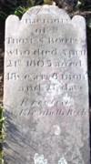

Thomas Boots
Subsequent resources tell us that one-time Albany resident Thomas Boots probably was born within a few years of 1750. We seek defining information on his origins and path to Albany.
An adult during the era of the American Revolution, we expect to find records relating to his wartime activities.
It appears that this individual was married. However, no information has been recovered from the extant records of early Albany's churches.
In 1800, the census for the second ward identified him as the head of a household with four young men a young woman, and an aging couple. In 1802, he was identified as the owner of a house and lot, another time as a "house and shop", and then (in 1801) as a half lot probably all on or near Lion Street in the second ward. 
Thomas Boots was buried from the Dutch church in late April 1803. Letters of administration were issued on his estate on May 14, 1803. At that time, Boots was identified as deceased and formerly a "nailor of the city of Albany." His principal creditor was Albany resident George Shepherd.
Afterwards, a stone erected by Elizabeth Boots (probably his widow or daughter) marked the grave of forty-eight-year-old Thomas Boots and was among those later "found" in the Lutheran Ebenezer plot at the Albany Rural Cemetery.
Missing important information and past diminishing returns, we move on for now from the life of Albany resident Thomas Boots.